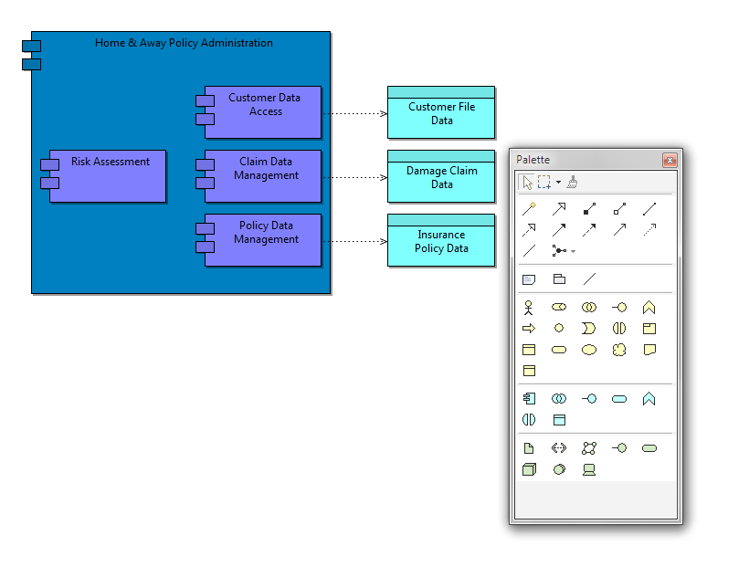

A View can be displayed and edited in Full Screen mode. This can be useful to maximise the View for presentation purposes. To do so select a View and press the F11 key on Windows or the Shift-Command-F keys on Mac, or choose the "Full Screen" menu item from the main "View" menu. The View will be maximised:

A View in Full Screen mode
The Palette is of the "floating" type and may be closed with the Escape key or the window's close button. Right-clicking on the View brings up a context menu where the Palette may be shown if it is not currently visible.